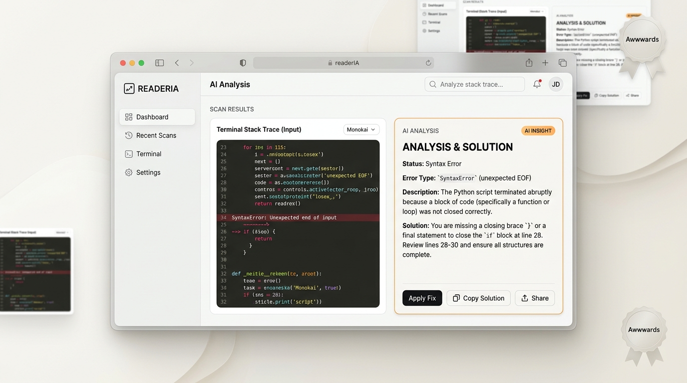

Ver Detalhes do Projeto
ReaderIA
Interpretação inteligente de erros de computador e stack traces em tempo real.
Conceito inovador de aplicativo que combina reconhecimento óptico de caracteres (OCR) e inteligência artificial generativa para traduzir logs crípticos de terminal e erros de compilação em explicações didáticas e soluções práticas para desenvolvedores.